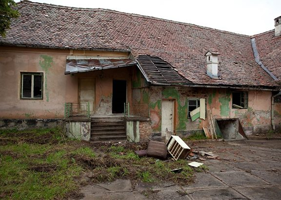
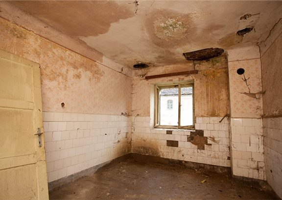
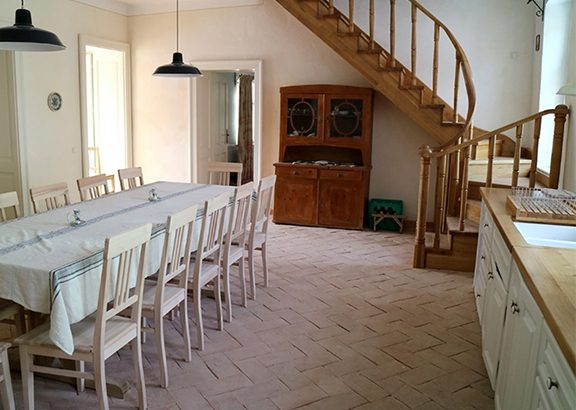
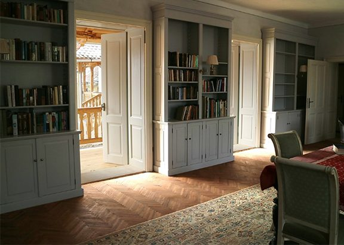

119 Richis
No 119 Richis had belonged to the Saxon Transylvanian grandfather of Herr Willi Untsch, who still lives in the village. In 1947 it was appropriated by the Communist government and began its descent into near total collapse.


119 Richis before restoration (Photos Tessa Traeger)
After extensive restoration work, the house was opened as a guesthouse on 18th October 2017.

At the opening ceremony Jessica Douglas-Home and Caroline Fernolend paid tribute to the outstanding work of MET architect Noemi Simo, project manager Alexandru Neagru as well as to Richis master builder Rares and his team. The Trust is immensely grateful to David Mlinaric and Jane Ormsby Gore for their help in designing the interior and to John Murray for the completion of the library.


The house is now fully functioning as one of the Trust's guesthouses.